Hyttetur, kollektiv og reise
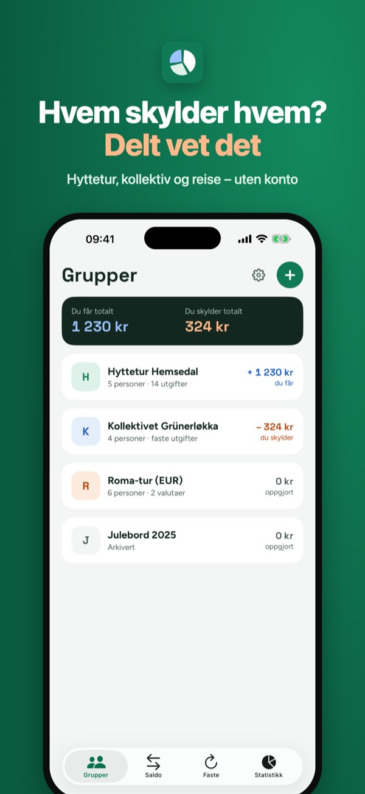
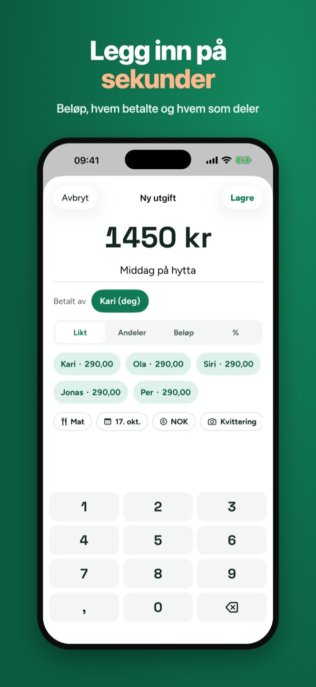
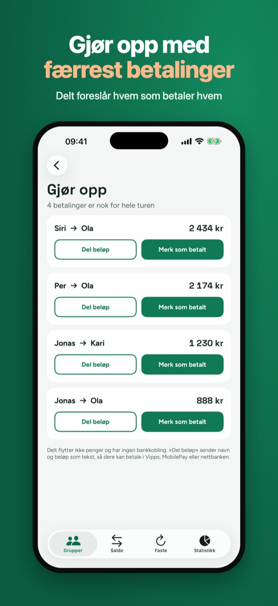
Del utgiftene på hytteturen, i kollektivet eller på reisen – uten regneark og uten konto. Legg inn hvem som betalte hva, så viser Delt hvem som skylder hvem og hvordan dere gjør opp med færrest mulig betalinger.
Inviter de andre med en iCloud-lenke. De som har appen, legger inn egne utgifter, og endringene synkes. Ingen trenger konto hos oss. Virker også uten nett – endringene sendes når du er på nett igjen. Hver utgift har historikk, så alle ser hvem som endret hva.
• Kvitteringsbilder på utgiftene
• Flere valutaer med kurs du skriver inn selv
• Faste utgifter for kollektivet: husleie, strøm og internett legges inn hver måned
• Statistikk per kategori og per person, eksport til regneark (CSV), PDF og bilde av saldoen
Grupper, utgifter, saldo og oppgjør kan brukes uten kjøp – uten grense per dag.
Delt flytter ikke penger og har ingen bankkobling. Betalingen gjør dere selv, for eksempel i Vipps eller nettbanken.
Språk: norsk, dansk, finsk og engelsk.
Terms of Use (EULA): https://www.apple.com/legal/internet-services/itunes/dev/stdeula/
Privacy: https://baytechbv.github.io/privacy/split-nordic/
Rejse, sommerhus, bofællesskab
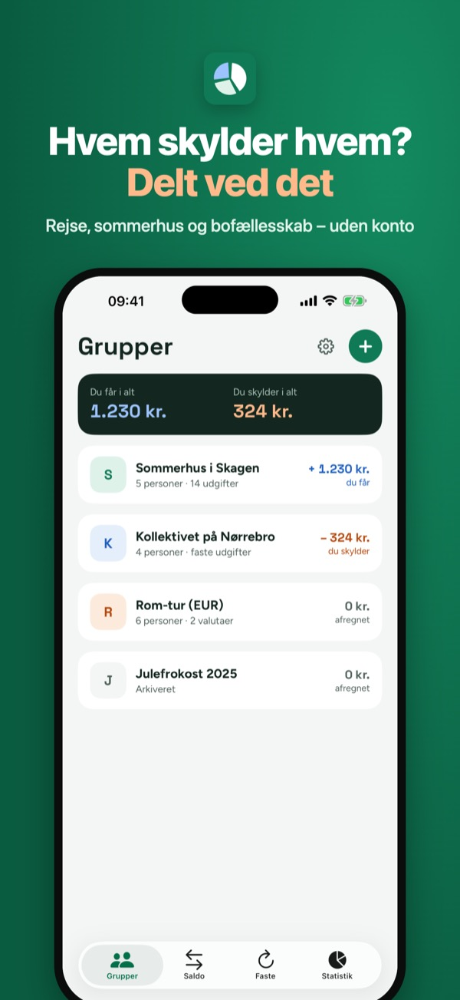
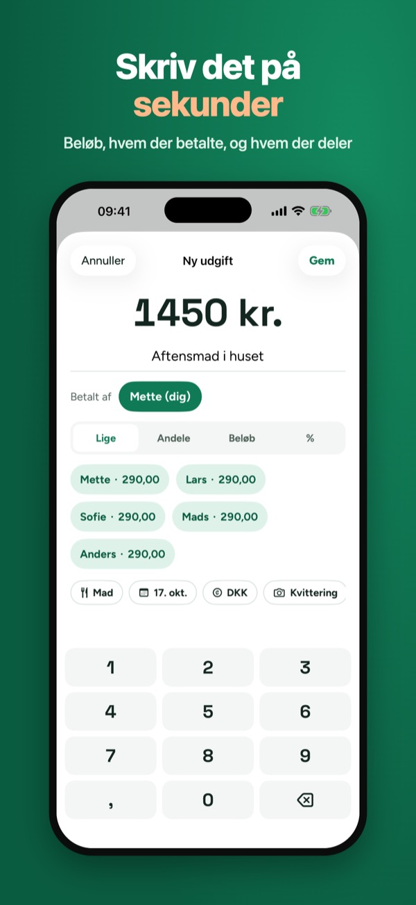
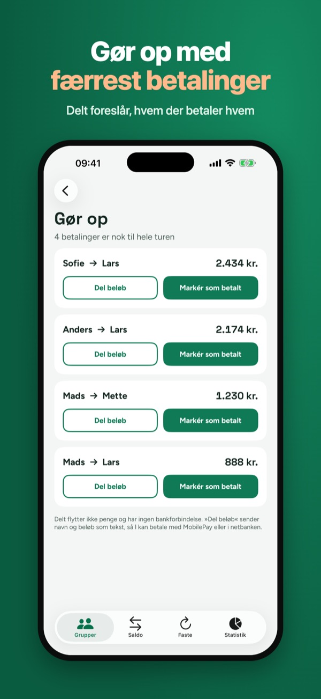
Del udgifterne på sommerhusturen, i bofællesskabet eller på rejsen – uden regneark og uden konto. Skriv hvem der betalte hvad, så viser Delt, hvem der skylder hvem, og hvordan I gør op med færrest mulige betalinger.
Invitér de andre med et iCloud-link. Dem, der har appen, skriver selv deres udgifter, og ændringerne synkroniseres. Ingen behøver en konto hos os. Virker også uden internet – ændringerne sendes, når du er online igen. Hver udgift har historik, så alle kan se, hvem der ændrede hvad.
• Kvitteringsbilleder på udgifterne
• Flere valutaer med en kurs, du selv skriver
• Faste udgifter til bofællesskabet: husleje, el og internet tilføjes hver måned
• Statistik pr. kategori og pr. person, eksport til regneark (CSV), PDF og billede af saldoen
Grupper, udgifter, saldo og afregning kan bruges uden køb – ingen grænse pr. dag.
Delt flytter ikke penge og har ingen bankforbindelse. Betalingen klarer I selv, for eksempel med MobilePay eller i netbanken.
Sprog: dansk, norsk, finsk og engelsk.
Terms of Use (EULA): https://www.apple.com/legal/internet-services/itunes/dev/stdeula/
Privacy: https://baytechbv.github.io/privacy/split-nordic/
Mökkireissu ja kimppakämppä
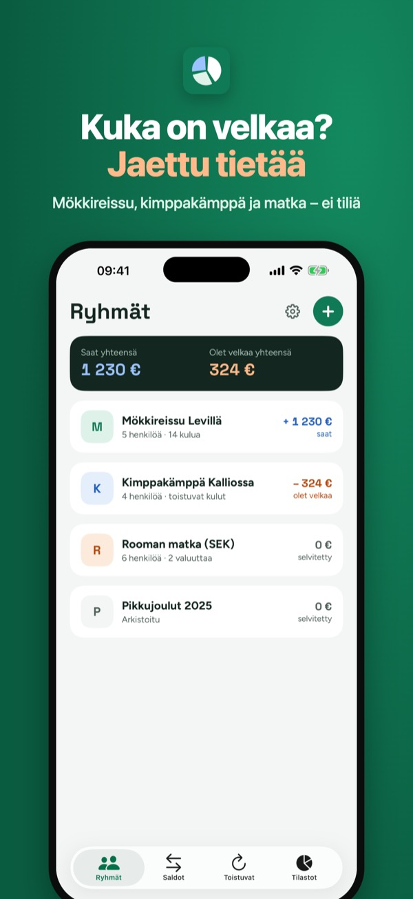
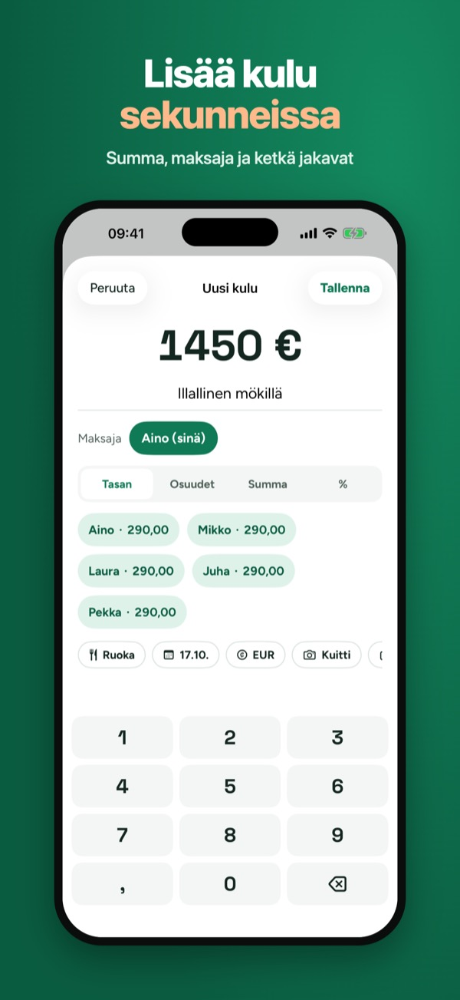
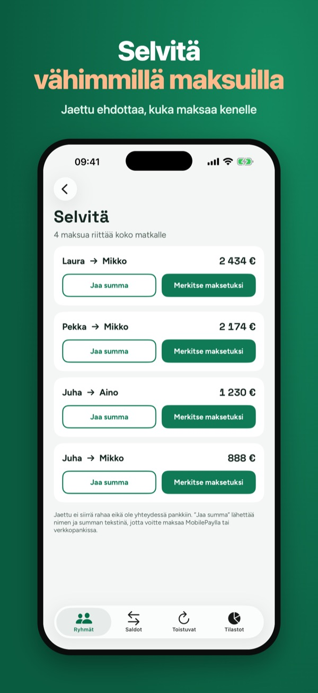
Jaa mökkireissun, kimppakämpän tai matkan kulut ilman taulukoita ja ilman tiliä. Lisää kuka maksoi mitäkin, niin Jaettu näyttää, kuka on velkaa kenelle ja miten velat selvitetään mahdollisimman vähillä maksuilla.
Kutsu muut iCloud-linkillä. Sovelluksen käyttäjät lisäävät omat kulunsa, ja muutokset synkronoituvat. Kukaan ei tarvitse tiliä meillä. Toimii myös ilman verkkoa – muutokset lähtevät, kun olet taas verkossa. Jokaisella kululla on historia, joten kaikki näkevät, kuka muutti mitä.
• Kuittikuvat kuluihin
• Useita valuuttoja itse syötetyllä kurssilla
• Kimppakämpän toistuvat kulut: vuokra, sähkö ja internet lisätään joka kuukausi
• Tilastot luokittain ja henkilöittäin, vienti taulukkoon (CSV), PDF ja kuva saldoista
Ryhmiä, kuluja, saldoja ja selvitystä voi käyttää ilman ostoa – ei päivärajaa.
Jaettu ei siirrä rahaa eikä ole yhteydessä pankkiin. Maksatte itse, esimerkiksi MobilePaylla tai verkkopankissa.
Kielet: suomi, norja, tanska ja englanti.
Terms of Use (EULA): https://www.apple.com/legal/internet-services/itunes/dev/stdeula/
Privacy: https://baytechbv.github.io/privacy/split-nordic/
Trips, cabins and shared flats
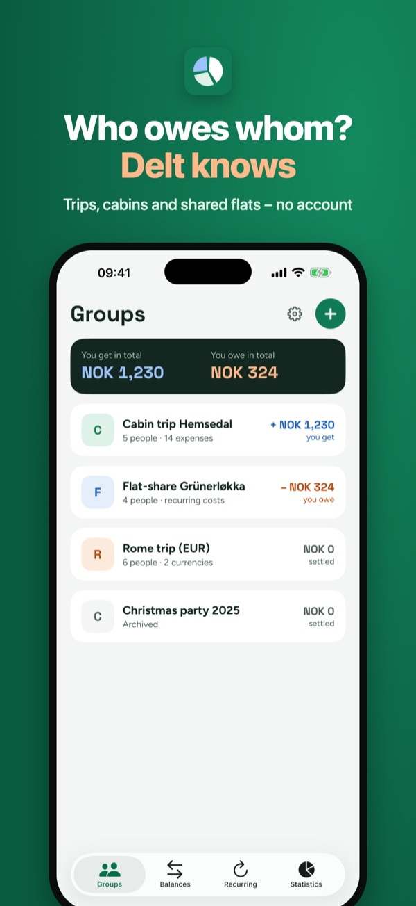
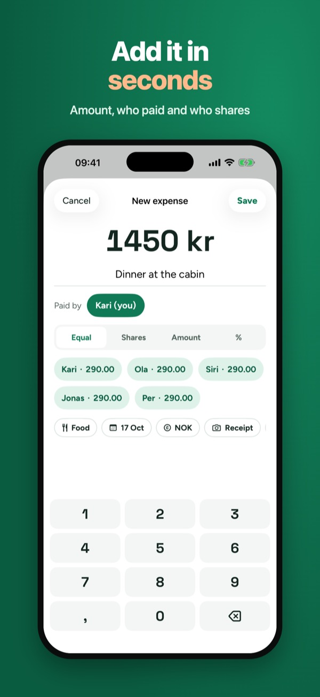
Split the costs of a cabin trip, a shared flat or a holiday – no spreadsheet and no account. Add who paid what, and Delt shows who owes whom and how to settle up with as few payments as possible.
Invite the others with an iCloud link. People with the app add their own expenses and changes sync. Nobody needs an account with us. Works offline too – changes are sent when you are back online. Every expense keeps a history, so everyone can see who changed what.
• Receipt photos on expenses
• Several currencies with an exchange rate you type in yourself
• Recurring costs for a shared flat: rent, electricity and internet are added every month
• Statistics by category and by person, export to spreadsheet (CSV), PDF and an image of the balances
Groups, expenses, balances and settling up can be used without buying – no daily limit.
Delt does not move money and has no bank connection. You pay each other yourselves, for example with Vipps, MobilePay or your bank app.
Languages: Norwegian, Danish, Finnish and English.
Terms of Use (EULA): https://www.apple.com/legal/internet-services/itunes/dev/stdeula/
Privacy: https://baytechbv.github.io/privacy/split-nordic/